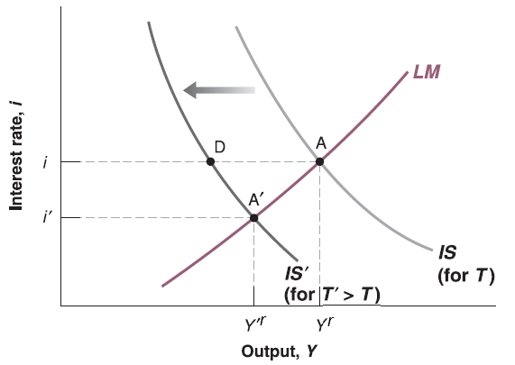

Lecture 6: IS-LM Model
Mingze Huang
2021-08-02
Exogenous and Endogenous variables in IS-LM Model
Recall the IS-LM Model:
\[
\begin{cases}
Y^{r} = c_{0}+c_{1}(Y^{r}-T)+I(i)+G\\
\frac{M}{P}=Y^{r}\cdot L(i)
\end{cases}
\]
There are only two variables are endogenous (determined by the model itself): real GDP (\(Y^{r}\)) and interest rate (\(i\))
Other variables are given (exogenous, determined outside of the model):
Autonomous consumption (\(c_{0}\)) and marginal propensity to consume (\(c_{1}\)) depend on consumer’s preference.
Net taxes (\(T\)) and government expenditure (\(G\)) depend on government’s fiscal policy. Budget of U.S. Government
The detail structure of investment function (\(I(\cdot)\)) depend on firm’s decision and productivity, although we know it should be a decreasing function of interest rate (\(i\)).
Money supply (\(M\)) depends on government’s monetary policy FOMC
This model assume aggregate price level (\(P\)) is given and unchanged in the short run.
The detail structure of \(L(\cdot)\) depends on consumer’s liquidity preference, although we know it should be a decreasing function of interest rate (\(i\)).
Relation between Endogenous Variables in IS-LM Model
As we discussed before, IS-LM model is two equation, two unknown (endogenous variables) system.
Take all exogenous variables (\(c_{0}\), \(c_{1}\), \(T\), \(G\), \(M\), \(P\)), investment function (\(I(\cdot)\)) and liquidity function (\(L(\cdot)\)) as given.
Two unknowns (endogenous variables) \(Y^{r}\) and \(i\) can be put on horizontal and vertical axis.
Two functions can be drawn as two lines on the graph. The relation between two unknown endogenous variables (\(Y^{r}\), \(i\)) can be represented by the points on those two lines.
The cross point of two lines is just the solution of this equation system which meet the equilibrium condition for both equations (markets) simultaneously.
If we are going to change the value of exogenous variables (\(c_{0}\), \(c_{1}\), \(T\), \(G\), \(M\), \(P\)), then the corresponding line will shift to reflect new equilibrium on that market. New general equilibrium would be on the new cross point.
Fiscal Policy on IS Curve
Assume government increase net taxes \(T\) (increase taxes or cut transfer payments), we see \(T\) only appears on IS relation: \(Y^{r} = c_{0}+c_{1}(Y^{r}-T)+I(i)+G\)
Rearrange it: \((1 - c_{1})Y^{r} = c_{0}-c_{1}T+I(i)+G\)
Apparently, for any interest rate \(i\), increase in \(T\) will decrease the right hand side of equation since \(c_{1}>0\). To hold the equality, left hand side should go down. Since \(1 - c_{1} > 0\), \(Y^{r}\) will go down. So that IS curve will shift to the left.

Fiscal Policy on IS-LM Curve
Now put the LM curve on, we can see the new cross point as new general equilibrium. The new equilibrium has lower interest rate (\(i\)) and lower output (\(Y^{r}\)).

The intuition starts from goods market (IS relation):
The increase of net taxes \(T\) leads to the decrease of consumer’s disposable income \(Y_{D}^{r}=Y^{r} - T\).
Lower disposable income \(Y_{D}^{r}=Y^{r} - T\) reduces induced consumption \(c_{1}\cdot Y_{D}=c_{1}(Y^{r} - T)\) and then consumption \(C\).
Eventually production (real GDP \(Y^{r}\)) decreases due to lack of consumption demand.
Fiscal Policy on IS-LM Curve
Then goes to financial market (LM relation):
Lower income (real GDP \(Y^{r}\)) and lower consumption (\(C\)) lead to lower transaction need.
However, real money supply (\(\frac{M}{P}\)) is given, consumers use extra money to buy more bonds to earn interest. Bond issuers can offer lower interest rate (\(i\)) since buyers compete with each other.
In summary, net taxes (\(T\)) goes up, output (real GDP \(Y^{r}\)) and interest rate (\(i\)) goes down.
Also, disposable income (\(Y_{D}^{r}\)) and consumption (\(C\)) go down.
Question: government can choose government spending \(G\) through budget legislation process. What do you think about the effect of \(G\) on output (\(Y^{r}\)), interest rate (\(i\)), disposable income (\(Y_{D}^{r}\)) and consumption (\(C\))? Midterm Project
Monetary Policy on LM Curve
Assume federal reserve system increase money supply \(M\), we see \(M\) only appears on LM relation: \(\frac{M}{P}=Y^{r}\cdot L(i)\)
For any output \(Y^{r}\), increase in \(M\) will increase the left hand side of equation since aggregate price level \(P\) is assumed to be unchanged in short run. To hold the equality, left hand side should go up. Since \(L(\cdot)\) is some decreasing function, \(i\) should go down. So that LM curve will shift down.
Monetary Policy on IS-LM Curve
Now put the IS curve on, we can see the new cross point as new general equilibrium. The new equilibrium has lower interest rate (\(i\)) and higher output (\(Y^{r}\)).

Monetary Policy on IS-LM Curve
The intuition starts from financial market (LM relation):
The increase of money supply \(M\) leads to the increase of real money supply \(\frac{M}{P}\).
Higher real money supply (\(\frac{M}{P}\)) means consumers have more extra money to buy more bonds to earn interest. Bond issuers can offer lower interest rate (\(i\)) since buyers compete with each other.
Then goes to goods market (IS relation):
Lower interest rate (\(i\)) leads to higher investment (\(I(i)\)) since investment function is decreasing function.
Higher investment (\(I(i)\)) leads to more production (real GDP \(Y^{r}\)) and more demand on capital goods.
More production (real GDP \(Y^{r}\)) leads to more income (e.g. wage, dividend), then higher disposable income \(Y_{D}^{r}=Y^{r} - T\).
Higher disposable income \(Y_{D}^{r}=Y^{r} - T\) increases induced consumption \(c_{1}\cdot Y_{D}=c_{1}(Y^{r} - T)\) and then consumption demand \(C\) as well.
In summary, money supply (\(M\)) goes up, interest rate (\(i\)) goes down but output (real GDP \(Y^{r}\)) goes up.
Also, investment (\(I(i)\)), disposable income (\(Y_{D}^{r}\)) and consumption (\(C\)) goes up.